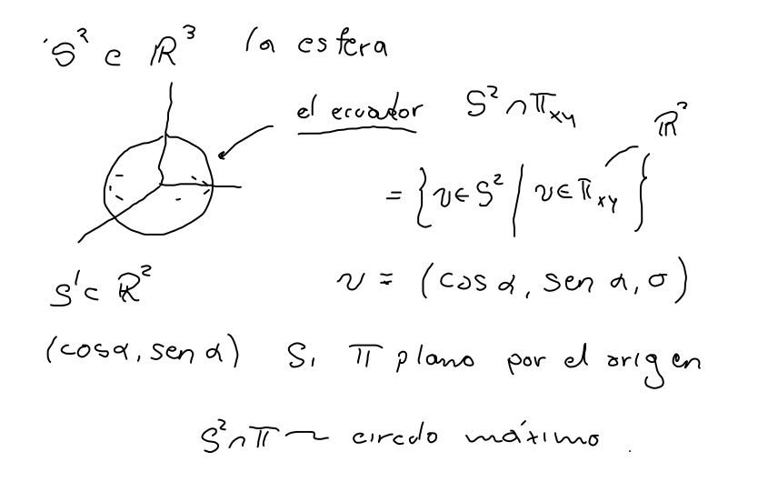
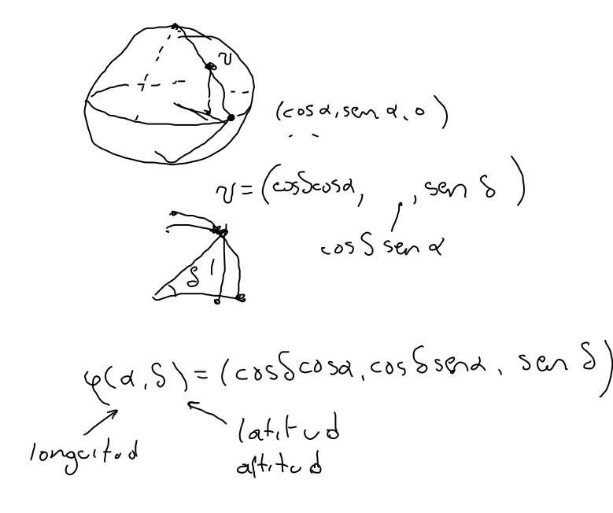
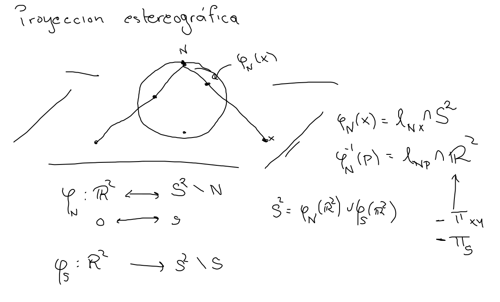

La esfera
Vectores en R3
S2={v∣v∈R3,∥v∥=1}

φ(α,δ)=(cosδcosα,cosδsinα,sinδ)

Cartas coordenadas
φ1(x,y)=(x,y,1−(x2+y2))

Proyección estereográfica

Esfera de Riemann
Considerando que a la proyección estereográfica le falta un punto, usando la identificación de R2 con los números complejos C obtenemos
S2=C∪{∞}
Con lo cual tenemos una interpretación geométrica de las transformaciones de Möbius.